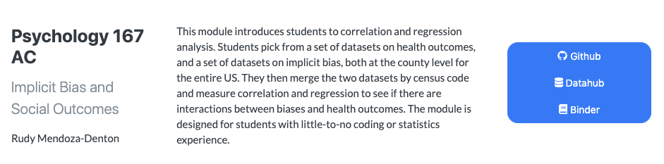
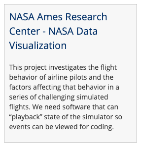
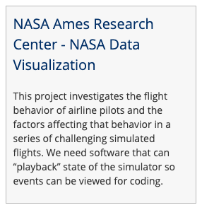
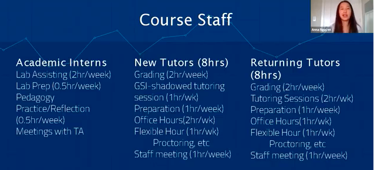

[NSF IUSE Documentation Index]{.underline}
[Outline (links to separate google document)]{.underline}
[Data Science Modules]{.underline}
[Domain Connector Courses]{.underline}
[Jupyter Notebook Development Team]{.underline}
[Data Peer Consulting]{.underline}
[Data Scholars Foundations Seminar]{.underline}
[Data Science Discovery Projects]{.underline}
[Data Scholars Pathways Seminar]{.underline}
[Foundations of Data Science Course]{.underline}
[Undergraduate Student Instructors]{.underline}
[Data Scholars Program]{.underline}
[Data Scholars Discovery Research Projects]{.underline}
[Cyberinfrastructure]{.underline}
{width=”5.875in” height=”1.9375in”}
Data Science Modules¶
Overview¶
Data Science Modules (“DS Modules”) are short explorations into data science that give students the opportunity to work hands-on with a data set relevant to their course and receive some instruction on the principles of data analysis, statistics, and computing. DS Modules are designed and taught in an existing course from any discipline or field with the help and collaboration of the Data Science Modules Development Team and the course instructor. These DS Modules are often presented as interactive lectures or labs that allow students to learn from data sets that pertain to their course material.
The target audience for DS Modules are students with little to no previous data science knowledge or experience. Providing DS Modules within existing courses and in a range of disciplines, allows students who may never sign up for a data science course on their own the opportunity to gain skills in the field of data science.
The DS Modules Development Team collaborates with instructors across different departments and with a range of technical skills in order to connect with a wide variety of students. Cross-departmental connection helps to build the DS Modules program presence on campus and attract other faculty. Instructors work closely with the Development Team so that they can either teach the DS Modules themselves or assist while the DS Modules Development Team leads the class.
DS Modules are an excellent way for students to have a smooth and supported introduction to computing, statistics, and vital tools used in data science, which are becoming increasingly relevant across academic disciplines. They empower students to do research and pose their own questions using data, as well as enable instructors to apply new lenses to their area of expertise. By the end of a DS Module, students will learn to process data in real-time, write and execute code, make visualizations, develop analytical skills, and learn to apply these skills to their relevant field or course work.
Key Pedagogical or Curricular Strategies
DS Modules vary widely and are customized based on each instructor’s objectives and course content. A DS Module might simply be one or two lectures on how to interpret data and statistics in news media reports or a multiple-session research workshop for students working on a data-centered project. Students in DS Modules learn to use the [Python]{.underline} programming language and complete assignments in [Jupyter Notebooks]{.underline}, both gold-standard data science tools used in the [Data Science Undergraduate Studies]{.underline}. Instructors use these tools to share data with students, assign homework and write instructions in the cloud-based notebook, and then ask for students’ interpretation of the results, all within the same environment.
As mentioned, DS Modules bring data-driven instruction into courses by providing Jupyter Notebooks, an open-source web application that allows you to create and share documents that contain live code, equations, visualizations, and narrative text. Jupyter Notebooks are used for data cleaning and transformation, numerical simulation, statistical modeling, data visualization, machine learning, and much more.
Undergraduate data science students on the Jupyter Notebook Development Team work with instructors to create the content in a set of 1 to 3 notebooks to deploy into an existing class. The instructor may already be teaching about a topic extensively so that students are primed for the content. For example, if implicit bias is covered heavily in a few sections of a psychology course, implementing a DS Module allows students to collect and explore data, and analyze trends in the research field. This hands-on data analysis often includes computational or critical thinking assignments.
Implementation Steps
If an instructor would like to incorporate a DS Module into their course, the first step in the process is to hold a one-on-one meeting with a DS Modules Development Team member to outline the deliverables, curricular strategies, and develop a plan for collaboration between the DS Modules Development Team and the instructor, which should include a timeline for mid-term and long-term deliverables. In a subsequent planning meeting, the specific data set is discussed and the instructor’s desired outcomes are further clarified.
Depending on the faculty member and the graduate students supporting the course, the DS Modules Development Team may offer more or less support. Sometimes the faculty is familiar with Python and prefers deploying the Jupyter Notebook themselves. Alternatively, the DS Modules Development Team can teach the DS Modules to the class.
Another implementation method can include a Graduate Student Instructor (GSI). The GSI can learn how to use the Jupyter Notebook and implement it within their lab section. The Jupyter Notebooks are created with an entry-level coding approach and support documentation so that they can be straightforward for the GSIs to support within the context of the DS Module lesson. In this case, the DS Module Development Team will train the GSI and attend the first lab to support during its deployment. Then, the second time the GSI offers the class they can either instruct independently or have continued support from the DS Modules Development Team.
After implementing a DS Module, it is important for them to collect feedback from the instructor and the students. The Data Science Undergraduate Studies likes to have constructive discussions with instructors about what worked well, what didn’t work, and to receive ideas for improvement. They collect student feedback by sending out evaluations that ask questions about both the content and pacing.
Faculty have had a difficult time following-up over time for further discussions and continued iterative development, implementation, and ongoing use of the Jupyter Notebook. The Jupyter Notebooks need to be regularly updated both for content and for technical updates. Therefore, if the Notebooks are not regularly updated, then there is a loss of efficiency. It is important to have a regular schedule to refresh the materials and to ensure they continue to be a helpful resource.
*Training & Outreach *
The DS Modules Program Coordinator executes a flow of data science instruction and recruitment for the DS Modules program. It can begin with the summer workshop where the DS Modules program teaches faculty from various departments data science methods and gets them ready to adapt data science teaching tools to their own subject area. This training serves as a way to connect with faculty by working together to create new DS Modules for their courses and teaching them key preparation and implementation methods.
The Data Science Undergraduate Studies at Berkeley has created a [Curriculum Guide]{.underline} to help instructors with set-up, workflow, and pedagogy in teaching data sciences courses connected to Data 8. Much of the content in the [Curriculum Guide]{.underline} is useful for instructors teaching with Jupyter Notebooks and JupyterHub deployments.
Program representatives speak at the [Academic Innovations Studio]{.underline}, a campus space that supports pedagogy through the collaboration of faculty, researchers, graduate students, and staff. The organization is part of [Research, Teaching, and Learning]{.underline}, a larger organization that also houses the [ Research IT]{.underline} group.
The Data Science Undergraduate Studies is continuously looking for faculty interested in developing a DS Module for their course. They often give presentations to departments, groups of faculty, or hold one-on-one meetings with instructors to give them an idea of how implementing a DS Module would be beneficial for their students.
In terms of recruiting students for the DS Module teams, sometimes it is not difficult finding students who want to be involved in the DS Module development teams, and in others, additional outreach is needed.
Key Diversity and Inclusion Practices and Strategies
The focus of conducting DS Modules is to (a) give students exposure to data science through cross-disciplinary instruction and (b) offer data science tools to students who may otherwise never have the opportunity. DS Modules have been taught to everyone from first-year students with no coding or statistics experience to seniors taking upper-division econometrics. The [Data Science Undergraduate Studies]{.underline} has developed Data Science Modules for courses in:
Sociology
Legal Studies
Economics
Psychology
Information Studies
Medieval Studies
Rhetoric
Gender and Women’s Studies
Linguistics
Education
Economics
Education
Gender and Women’s Studies
Information Studies
Legal Studies
Linguistics
Medieval Studies
Psychology
Rhetoric
Sociology
The [Data Science Undergraduate Studies]{.underline} partner with D-Lab, and often collaborate with [Cal NERDS]{.underline}, an organization that is “comprised of a suite of programs and initiatives that provide faculty-mentored research opportunities, specialized tech training, graduate school preparation, career coaching, community building, and professional development to high achieving STEM undergraduates and graduate students.” [Cal NERDS]{.underline} gain expertise, build community, and contribute to the STEM workforce.
The DS Modules team works with [the Summer Bridge Program]{.underline} to increase the diversity of UC Berkeley students working on DS Module development. The Summer Bridge program is a six-week, academic residential program, serving 300+ entering undergraduates every summer. Scholars take a full course load, including two educational courses and a mentorship program that acclimates students to the research university.
The [Data Science Undergraduate Studies]{.underline} is working to get High School students involved through a summer program. This program is currently being developed by ______.
Given that all UC Berkeley undergraduates have an American Cultures graduation requirement, there has been a big push to develop DS Modules within [American Cultures]{.underline} classes. This provides another great opportunity to expand data science approaches into topic areas that have not traditionally employed them. This collaboration has produced a portfolio of social justice DS Modules (within the American Cultures courses). In some cases, the DS Modules team reached out to AC instructors, whereas in other cases motivated instructors reached out independently to the team with a request to develop a DS Module. To begin the process, an instructor can make a straightforward request using the form on the Data Science Undergraduate Studies website.
For example, a DS Module was developed for Ethnic Studies 21, a class on mass incarceration, by a student who had taken the course in a previous semester. This DS Module explored prison overcrowding and realignment data. In a full cycle of its development and implementation, this studentled the DS Module in the class for its initial deployment.
Links to Key Cyber Resources
Data Science DS Modules
Data Science Modules informational
[GitHub]{.underline}: Jupyter
notebooks are developed and stored. The public materials are for students. The private materials are for the faculty and GSIs.
Answer Keys and information for instructors is kept behind a
password online on GitHub
[[Deployment
Calendar]{.underline}](https://calendar.google.com/calendar/embed?src=berkeley.edu_gka2us8b56n33cqvch528gt650%40group.calendar.google.com&ctz=America%2FLos_Angeles)
[[Data Peer
Consultants](https://docs.google.com/document/d/1F66WKf7dYEglM9tUexe5MWYtqkO8qZz1G_zGYr7dlOk/edit)]{.underline}
Located in the Moffit Library
They can assist GSIs if they are not comfortable with the DS
Module’s content.
DS Module students can work with a Data Peer Consultant during
The DS Modules Program will alert the peer consultants at
Moffitt before the DS Module’s deployment so that they can prepare to serve as alternative office hours.
Publicity
Building Data Science Education Together
-
explaining DS Modules
Examples
Course listing on UCB DSEP [GitHub]{.underline}{width=”6.5in” height=”1.6111111111111112in”}
Course GitHub [website]{.underline}
 {width=”6.5in”
height=”1.2916666666666667in”}
{width=”6.5in”
height=”1.2916666666666667in”}
Course DataHub [website]{.underline}{width=”5.003968722659668in” height=”3.5364588801399823in”}
Course Binder [website]{.underline}
 {width=”4.842791994750656in”
height=”3.0677088801399823in”}
{width=”4.842791994750656in”
height=”3.0677088801399823in”}
 {width=”2.3020833333333335in”
height=”1.71875in”}
{width=”2.3020833333333335in”
height=”1.71875in”} {width=”2.15625in”
height=”1.5208333333333333in”}
{width=”2.15625in”
height=”1.5208333333333333in”}
Domain Connector Courses
Overview
The Domain Connector Courses program weaves together core concepts and approaches from Data 8 with complementary ideas or areas. These courses allow students to use analytic tools from the Foundations Course and apply them within diverse disciplinary contexts. Students will gain additional experience, broader insights, and deeper theoretical or computational foundations. Courses include a combination of data science and domain-specific material, and are developed for and with departments across campus. The Connector Courses program are semester-long courses within a domain area, while the Data Science Modules are shorter lessons within an existing course.
Program Description
The Connector Courses bring together domain-specific instruction and outreach to faculty and instructors interested in doing the curriculum development, along with support from student developers and open-access materials, that benefit both the students and the repository of courses.
A key feature of the Connector Courses is the iterative process of development, and the repeated offering of the course. The open-access curriculum guide provides those who are considering developing or taking a Connector Course with specific and accessible information.
The Connector Courses program has two facets:
The undergraduate data science student development along with the
implementation of the curriculum by faculty and graduate students
The undergraduate data science student experience in applying data
science
Target Audience
The Domain Connector Courses are an opportunity for students looking to explore a specific domain area (in a two-unit seminar) that is entry-level by design, specifically meant not to be overwhelming. These courses are intended to be taken in the same semester as the Foundations Course, although many students also take them after they have taken the Foundations Course.
Goals
A Connector Course allows students to weave together core concepts and strategies from the Foundations Course with complementary class topics. Along the way, students gain additional experience, broader insights, and deeper theoretical or computational foundations. Instructors from across campus teach Domain Connector Courses. Data 8 and Connectors complement each other and often use similar materials, tools, and course infrastructure (e.g., DataHub, Piazza, Jupyter Notebooks).
Key Pedagogical or Curricular Strategies
Connector Courses are based on active learning as students navigate data science methodologies in class. Active learning is a method of learning in which students are actively or experientially involved in the learning process and where there are different levels of active learning, depending on student involvement (Bonwell & Eison 1991). The students are able to develop ways to evaluate trends in the data examples or those they have found pertaining to a specific field or sector.
Because the [Undergraduate Student Instructors (UGSIs)]{.underline} are a part of the support network, there is also a very deliberate and consistent near-peer learning model in action throughout the classes. UGSIs are students that (a) have already taken the course and received a high mark, (b) are in good academic standing, and (c) enroll in or have taken a pedagogy class. Student instructors who assist with Connector Courses are called Connector Assistants (CA).
The courses use open-source [Jupyter Notebooks]{.underline} with materials stored and made accessible on GitHub. A Connector Course’s GitHub site includes materials accessible to the students as well as private, locked materials, such as homework solutions and exam answer keys, that are only accessible to the faculty and CAs.
Key Diversity and Inclusion Practices and Strategies
The diverse courses allow for students across general interests to take classes together. For example, a psychology student could take a psychology-specific Connector Course and a data science student could be interested in the application in psychology.
As well, this program matches student developers to assist in the creation of materials for the courses. They can help brainstorm ideas and translate them into Python. The faculty work with students in close collaboration. Students can receive payment for this work in the summer to early semester weeks. This feedback loop allows faculty and instructors to experience the learning and development of course materials with an experienced data science developer student.
A second significant opportunity for both the course instructor and students is that the Data Science Undergraduate Studies (DSEP) can match up one or more undergraduates to assist with the course throughout the semester. They do not do any grading but do answer questions during lab sections, proofread notebooks, maintain the course website, develop course materials, etc. The specific tasks a Course Assistant (CA) takes on can vary based on the instructors’ and the CA’s interests.
Domain Connector Courses serve as the developers of the Data Science Undergraduate Studies (DSEP) for the campus at large. The approach and aim have been to do as much outreach as possible, exploring as many courses with faculty across departments and waiting to see which courses thrive and succeed.
The policy is that DSEP staff will recruit and assign one CAper 30 seats in the Connector. The instructors are free to decline the help. The tasks of the CA will be to attend class and hold one office hour per week. The instructors are fully encouraged to work out alternative arrangements with their CAs that fit their needs better.
Links to Key Cyber Resources
Domain Connector Course
Domain Connector Course
Frequently asked Questions
[[Curriculum Guide & Online
Textbook]{.underline}](https://ds-modules.github.io/curriculum-guide/intro)
[[Information on student help with
courses]{.underline}](https://ds-modules.github.io/curriculum-guide/connector/instructor/student-help.html)
[[List of Previous
Courses]{.underline}](https://ds-modules.github.io/curriculum-guide/connector/general/previous-connectors.html)
[[Current Course
Listings]{.underline}](https://data.berkeley.edu/academics/undergraduate-programs/data-science-offerings/spring-2020-courses)
[DSEP Website]{.underline}: includes
links to information
The non-public documents are in private repositories for some of the connector courses. The faculty make them restricted to store the answer keys, etc. Therefore, there can be two repositories for each class. One is available to everyone and one is kept private for instructors.
An example of a Domain Connector Course
Faculty select how to share their course materials (syllabus, slides, etc). This may include:
Google website
Personal or Course GitHub
Google Drive
The following are a series of materials used to publicize and implement the course Data Science and the Mind.
This is the listing on the Data Science Connector Courses [website]{.underline}.
 {width=”6.5in” height=”0.7222222222222222in”}
{width=”6.5in” height=”0.7222222222222222in”}
Expanded Listing [website]{.underline}
 {width=”6.400655074365704in”
height=”2.3489588801399823in”}
{width=”6.400655074365704in”
height=”2.3489588801399823in”}
GitHub [website]{.underline} course listing
 {width=”6.5in”
height=”1.1388888888888888in”}
{width=”6.5in”
height=”1.1388888888888888in”}
Best Practices for Variation Across Institutions
Each replication campus will need to carefully examine and support the development of partnerships based on the interest of instructors and students. A second consideration is how data science programs will keep these courses active after the teams create and deploy them. There needs to be a campus-specific system for the listing of existing course content, cycles of development, and deployment. All CAs are enrolled in a two-unit DeCal course, Teaching Data Science - Connectors. This DeCal provides them with the training needed to assist with the Connector courses. The DeCal consists of 90 hours of work for the semester, 39 hours of which will be spent on training and outside work for the DeCal course. The remaining 51 hours will be spent on any work related to the Connector Course. Here is how we have broken down these 51 hours:
9 hours of meetings with the Connector instructor
15 weeks x 2 hours weekly = 30 hours of Connector course labs
15 weeks x 1 hour weekly = 15 hours of office hours or lab prep
Other Implementation Notes
At UC Berkeley, there is an early summer workshop for instructors
and then biweekly meetings for Connector instructors. The workshop and meetings cover Piazza for instructors, a teaching guide for first-time Domain Connector Course instructors, and allow for the creation of a cohort of people who are now more familiar with one another each year.
Some of these courses have been developed and can replace other
required courses for students in specific departments. Examples include:
Computer Science 88 can be taken instead of Computer Science 61A
Statistics 89 can be taken instead of Math 54
Recommendations
There is a need for strong inter-departmental connections throughout the university. One way to address this concern is to collect data about how some inter-departmental connections work and others do not. This data would illuminate arguments for different supports, training, and follow-ups.
Second, graduate student research projects could be used to develop Connector Courses. There is a need for faculty or graduate students to include spatial data into one or more additional Connector Courses.
Third, the process of outreach could be more systematic and less organic. It is important that all instructors have an equal opportunity to develop a Connector. At larger campuses, it may be difficult to spread and publicize information about this course development opportunity.
Fourth, faculty may need a course release to develop a robust Connector Course. It is challenging for faculty to take the time to do this development and balance other responsibilities.
Fifth, many excellent Connector Courses have been developed by postdocs, lecturers, librarians, and other academic staff. These instructors may have more data science knowledge than tenured faculty and may be more motivated to develop a new course. A system to either recognize or compensate these para-academic instructors could speed up the development process.
What is the process for becoming a Connector instructor?
What are the criteria to accept a new course or not?
Jupyter Notebook Development Team
Overview
The Jupyter Notebook Development Teams allow undergraduate students to apply what they learn in data science courses in the production of teaching resources. Each team has a student Team Lead who is an experienced Jupyter Notebook developer. The teams collaborate with instructors from across campus to build and deploy the Jupyter Notebook in Applied Instructional Modules. Instructors teach DS Modules in one or multiple sessions of a course.
Target Audience
The Jupyter Notebook Development Team program assembles undergraduate student teams through an open application process. Students with a mix of data science skills, pedagogy knowledge, and a passion for a domain area are well-suited for the program. All students are part of an apprenticeship model of near-peer learning in their teams. There is a two-tier system of participation. Students begin by volunteering or working for credits and then can move on to the second tier. Students that have completed at least one semester as a team member are eligible to become a Jupyter Development Team Lead. These students receive pay for overseeing the development of the Jupyter Notebook with their team.
Goals
Notebook teams develop essential course materials. Their process and production with faculty result in real-time open data science educational content. This content provides added value to existing courses. With this added value entering the campus community, moreover, the outreach and conversations about data science and its programs at UC Berkeley increase their reach institutionally.
The DS Modules Program Coordinator for the UC Berkeley Division of Computing, Data Science, and Society oversees the Development Teams. Before building the DS Module, the DS Module Program Coordinator writes a contract that includes the expectations of the faculty member and the responsibilities of the development team. There are usually two types of faculty that are entering the process.
The first group of faculty are generally interested but do not know
anything about data science. For these faculty, the DS Modules Program Coordinator will work with them and the team of students to find and decide on an appropriate data set and plan how this will best fit into the course they are teaching. The development team can assist in teaching the material in the lecture, sections, or both.
The second group is faculty who are very familiar with data science
and quickly move through the process. These faculty take on more of the planning. They decide how the DS Module can function and the deployment in the course.
Once the faculty signs the contract that includes the guidelines for the course, the team of students will begin to work through the development of the DS Module together.
Pedagogical and Curricular Strategies
deleted.
Key Diversity and Inclusion Practices and Strategies
The Division’s student teams recruit from disciplines all across campus to give undergraduates opportunities to lead, form connections, and shape the Berkeley data science community. Teams take on projects in the curriculum, internal operations, analytics, and more. Team structure changes semester to semester based on where students see opportunities for the Division to grow. A holistic, codified application review process helps teams prioritize potential members with a passion for the field and a belief in a growth mindset in relation to technical skills and experience.
Links to Key Documents
The students use [JupyterHub]{.underline} to store their work on DS Modules and may use [Slack]{.underline} to communicate with one another about meeting notes. The completed DS Module materials storage is on [GitHub]{.underline}.
Other vital documentation to keep in mind includes the interview questions, onboarding agreement, orientation, and the contract template.
[[Interview
Questions]{.underline}](https://drive.google.com/file/d/15drDMD0IX_Ig_T-kwSlUgW0SL6ugdmYw/view?usp=sharing)
[[Applied Instructional DS Module: Undergraduate Curriculum
Developer Agreement](https://forms.gle/mwxDenAGHksCU1jM7)]{.underline}
[[Onboarding
Slides]{.underline}](https://drive.google.com/file/d/1RCiqK9JqnHYlt6YwvgPz53aZ-GaFIADY/view?usp=sharing)
[[Contract
Template]{.underline}](https://drive.google.com/file/d/17KLcms6XwRlarlUWRfnMG5qMCgWv1ie4/view?usp=sharing)
Program Description
Applied content in data science is made available by the work of the Jupyter Notebook Development Teams. They work in small groups on JupyterHub to stay thoughtfully involved in the ongoing process of applied data science lessons for entry level data scientists. Neer-peer learning allows students to move through apprenticeship level responsibilities as they move from novice (first tier) experiences into the lead of Team Lead (second tier). The student team members create course content gaining a sense of community, collaboration skills, and professionalization imbued in a growth mindset structure as they provide difficult content into accessible chunks.
Example
Stage 1 (Before the start of the semester): The contract is written
and a meeting is held by the domain-specific DS Modules Program Coordinator, the Data Science Undergraduate Studies Curriculum Coordinator, any Graduate Student Instructors, and the faculty.
Stage 2 (First week of the semester): Domain-specific DS Modules
Program Coordinator sends interest forms to the developers.
Stage 3 (Middle of the semester): The domain-specific DS Modules
Program Coordinator connects the faculty and student team members over email. This email includes guidelines regarding the minimum necessary requirements of collaboration for the Jupyter Notebook development. The faculty is made aware that they should expect an email weekly, be prepared to review the first version, and review the final Jupyter Notebook.
Stage 4: The Team Lead becomes the coordinator of communication with
the development team and the faculty. The Team Lead also stays in close contact with the domain-pecific DS Modules Program Coordinator.
If the Development Team Lead does not receive a response to an
initial and a follow-up reminder email, they will contact the Program Coordinator. The Program Coordinator will then reach out.
The faculty needs the capacity to be able to answer questions
about the set deployment date of the domain-specific DS Module weeks in advance as the Jupyter Notebook is developed. Timely feedback and requests for changes need to be sent early so that students have the time in their course and schoolwork schedule to make the updates.
Additional Guidance for Implementation
A critical factor in moving this program from university to university is the infrastructure. UC Berkeley builds a data science program that uses existing campus resources, a specific group of staff, and agreed-upon guidelines.
There is an assumption that all students have access to a laptop or
Chrome book because the library has a lending program.
The program currently uses the previously existing Data Hub and data
puller.
UC Berkeley’s program has an instructional designer with some data
science teaching experience. Having someone who devotes their full time and has a knowledge of teaching foundational data science is a crucial component of the Jupyter Notebook Development Teams. Many of the faculty would like to add data science content into their courses through DS Modules and work with the development teams but do not know how to begin. Having staff with this experience provides someone with background work in seeking and preparing an appropriate data set and assisting in the translation of the learning experience for the Development Team.
UC Berkeley’s program has specific foundational criteria for their
data sets. It must be appropriate content licensed for their use and that students can work efficiently. Again, if the faculty does not have a background in data science, this might be an impossible feat independently.
Recommendations
Finally, one idea for the program that is not yet deployed is the creation and repetition of DS Module development using templates. A set of DS Module templates would include domain agnostic templates for linear regression, cleaning data, hypothesis testing, and other familiar topics. The Jupyter Notebook Development Teams would build specific DS Modules using the models. They may be more formulaic than the current process at UC Berkeley, but it could make the management of DS Module development simpler.
 {width=”6.5in”
height=”3.111111111111111in”}
{width=”6.5in”
height=”3.111111111111111in”}
Data Peer Consulting
Overview
Data Peer Consulting is a program that supports data science work across campus. The Data Peer Consultants offer meetings with students, post-docs, visiting scholars, and faculty regarding any questions about a data science project. Currently, they primarily serve undergraduate students. There is also a smaller population of Master’s-level and Ph.D. students using their service. They also assist students from undergraduate and graduate-level courses that include a DS Module.
Data Peer Consulting is a program available to the campus population throughout the academic year with an online calendar that displays both the scheduled drop-in times and the peer consultant, along with the designated location on the third floor of the undergraduate library or the online meeting Zoom Link. This project began in Fall 2017 as a collaboration between the [Center for Connected Learning]{.underline} (the learning floor of spaces in the student library to support varying sensory needs and forms of hands-on learning), [D-Lab]{.underline}, and the Division of Computing, Data Science, and Society. Currently, a total of sixteen students are involved in the program. Two of these students serve as Data Peer Consulting Leads who oversee student meetings and communication. The team lead directly connects with both the program analyst for the UC Berkeley Data Science Undergraduate Studies and the program coordinator as they supervise their peers. All consultants work three hours a week in pairs.
The physical Data Peer Counseling station is set up in the library corner as a table with two individuals within a roped-off area that is perpendicular to the Data Science Peer Advising table. They have clear signage and laptops with them. This resource offers face-to-face meetings between 11am to 4pm Monday through Friday during the academic year. Students can also contact them through their program email to ask about scheduling other appointment times. A consultation typically lasts from fifteen to thirty minutes. Hour-long consultation may occur but are not typical.
Target Audience
Because the Data Peer Consulting is physically located in a public library space, it can reach the broader campus community of students. The sixteen data peers are undergraduate students that list their coursework online so that other undergraduate students can best match their needs to the data peer. Two Data Peers commented that their primary audience is students who are not majoring in data science. The Data Peer Consulting program aims to support students from a wide range of domains who have data science questions.
Goals
Overall, the primary goal of Data Peers is to support students’ data science work across campus. Data Peers is a drop-in support network for undergraduate, graduate, and faculty using data sciences in their research. This program allows for further assistance in data science for students from diverse domains who may be using data science in their coursework but do not yet understand the methodological framework.
This program offers a pathway to leadership in data science consultation. Students begin with specific coursework, then have the opportunity to work closely with the campus community. Students have hands-on experience that can build students’ resumes, offer course credit, and then a paid position through increased leadership.
Pedagogical and Curricular Strategies
The conceptual framework for this program includes:
Near Peer Learning
Self-directed learning
Crossover learning (the library as an informal space),
Distributed Learning Environments (practice across time and physical
areas, see Roediger III & Pyc, 2012)
As part of their training, the Data Peer student consultants all enroll in a pedagogical course, DATA-198 (a curriculum developed from combining multiple student-led DeCal courses that the students offered simultaneously covering similar material), that the DS Modules Program Coordinator teaches. The students are instructed broadly on education including the importance of Maslow’s hierarchy of needs and a specific session on critical education. Students gain hands-on work experience in the consultations.
There are two components to this course: the workshop and the application. Workshops aim to be thought-provoking and relevant. Students assess the value of workshop content afterward to improve future iterations. It is planned to be 7 to 8 weeks of curriculum. The course has a standard pedagogy and focuses on learning outcomes. The work is data science-specific including tips and tricks for Jupyter Notebooks, recommended Python libraries, and content on ethics. Discussions include challenges and opportunities in having open-ended conversations about data and how students can respond to them during consultations.
The program uses a Slack Channel to communicate about common questions when they need assistance from other Data Peers. The students participate as part of the course the first year and receive pay for subsequent semesters.
Key Diversity and Inclusion Practices and Strategies
As part of the DATA-198 course, students learn about stereotype threat, imposter syndrome, and tone of setting their learning environment. Many students express their desire to become involved because they want to join the existing community space of the Division of Computing, Data Science, and Society.
Cyber Resources
Students collect records regarding consultations as people drop-in. The service user fills out a form online. Consultees enter their names, department, the time, the kind of question they need assistance with, and other similar consultation demographics.
Links to Key Documents
[[Data Peer
Consulting]{.underline}](https://data.berkeley.edu/academics/resources/peer-consulting) UC Berkeley webpage
[[Data Peer Consulting Office of Research & Scholarship Information
webpage]{.underline}](https://research.berkeley.edu/data-peer-consulting)
[[Research IT Information
Page]{.underline}](https://research-it.berkeley.edu/data-peer-consulting-services)
[[Syllabus for DATA-198: Instructional Support
Seminar]{.underline}](https://docs.google.com/document/d/1OylJ3TPiqq_u6F5jmQdeNlwEuxsZDb66NQeadEJNilI/edit)
The DS Modules Program coordinator developed this course using
Instructional Google Slides
[[Design for
Teaching]{.underline}](https://docs.google.com/presentation/d/1M6iIsMsuMFcoJF_F8ZDyGBOYlLrqu5d5sy0S1V9q6PA/edit#slide=id.g4287549921_0_6)
[[Creating a Positive Learning
Environment](https://docs.google.com/presentation/d/1bBRWwM5j3PgaVekB7QGJcY493lElhY_S3VFHxKDqeLI/edit) ]{.underline}
[[How People
Learn]{.underline}](https://docs.google.com/presentation/d/17gGgqSx97ozodEmknY4QlESZfX1BTQx6EjKExDBfxs4/edit#slide=id.g42c2700ed2_0_248)
The Advanced Jupyter Notebook workshop is done entirely from
[Student f[eedback
form](https://drive.google.com/open?id=1wrtvf8uHRl9iTmKR8BBx5MkL06JaG0AE5Ay5GEVsN8E)]{.underline} (Spring 2020). We also have feedback for 2 to 3 other semesters, if helpful.
The [[DSEP Curriculum Guide Jupyter
Book]{.underline}](https://ds-modules.github.io/curriculum-guide/intro) helps staff/student interns create or work on data-driven courses or modules. Two student interns are updating it.
Program email: [[
ds-peer-consulting@berkeley.edu](mailto:ds-peer-consulting@berkeley.edu)]{.underline}
Program Description
The Data Peer Consulting program provides students and faculty across campus assistance with data science work through a drop-in table at the undergraduate student library. Data Peers all take a foundational course that transitions them into developing consultation and teaching skills. During the course session, they work as a data consultant and are eligible to receive compensation in subsequent semesters. All of the consultants connect through a Slack channel where they can share questions and answers about consultation sessions.
Individuals can also request a time outside of the drop-in sessions for a consultation. Consultations generally last from fifteen minutes to one hour. This service does not cover material of substantial depth but assists in getting people “unstuck” in their data science work. Data Peer Consulting is one of the many opportunities in data science programming at UC Berkeley where students can gain hands-on skills using and trouble-shooting data science issues on campus. They had about 100 help requests last year.
Best Practices for Variation Across Institutions
Other institutions need to think critically about how to train the data peers (the use of DATA-198 materials). They can ensure the compatibility of the training material content by updating them to fit their student audience best.
Other institutions should be aware of the specific gaps that this program can fill for their institution. Building a working relationship with departments, data science courses, and faculty is important. Relationships with faculty allow for a smoother connection as the institution uses the program as a broad resource.
Data Scholars Foundations Seminar
Overview
The Data Scholars Foundation seminar is a one-unit seminar for students in the Data Scholars program who are enrolled concurrently in the Foundations of Data Science course. This seminar meets for one hour, once per week. Students attend the class and engage with other student scholars, program staff, and the student instructor weekly. The course is a blend of instructional support for Data 8, guidance on navigating the data science ecosystem at Cal, a series of guest speakers, and workshops.
Target Audience
The Foundations Seminar is the first of the courses of the Data Scholars series. Students enroll while they enroll in the Foundations Course. The Foundations Seminar directly engages with the Foundations coursework, and Data Scholars are put into a lab or multiple lab sections together. The grouping of students in the lab creates a smaller community for Data Scholars to refine their understandings within the seminar.
Goals
Within this seminar, students will engage in topics of diversity in the field of Data Science and its unique challenges. The seminar explores various applications of Data Science and career possibilities. This allows the student to gain an understanding of the resources and opportunities available to them. Finally, students receive adequate support, mentorship, and tutoring to perform successfully in the Foundations Course.
Key Pedagogical or Curricular Strategies
Mentorship and support from the student-instructor weekly
50-minute tutoring session each week (through existing Data 8
tutoring infrastructure)
Academic and professional development support
Assistance from seminar student instructor and collaboration with
peers on the optional 4th project for Data 8, for students interested in completing it
Information on how to continue to engage with the Berkeley data
science ecosystem
Exploration of applications of data science, through guest speakers
and workshops
Key Diversity and Inclusion Practices and Strategies
The seminar is focused on developing the Data Scholars strategies for completing the Foundations of Data Science course. It introduces underrepresented students to data science, what you can do with a career in data science, data science opportunities at Cal, and practice problems.
As a small group, the students also discuss developing their resume, reviewing Foundations in Data Science Course topics, and attend workshops on web scraping, R, and other data science topics.
Links to Key Documents
[[Spring 2020 Foundations
Syllabus](https://docs.google.com/document/d/1EUyagoHDGqWxhYJzENPA-9VRvKDRMMejK1s0PW3E3sE/edit)]{.underline}
Program Description
The Foundations Seminar is a one-unit course that supports Data Scholars in their successful completion of the Foundations course and prepares them for the two other seminars in this series. Through a blend of targeted small group support and integration into a smaller data science community, these students can develop their data science literacy and network. The Data Scholars program supports URM students in their entry to data science at Cal and prepares them to use specific tools through workshops. This first seminar of the three-seminar series is a platform for further work in the Data Scholars Pathways and Data Scholars Discovery Research projects that follow.
Best Practices for Variation Across Institutions
It is essential to be mindful of the specific student body and needs of students on your campus. The focus of the Foundations seminar is to closely support students who may go underserved in their data science work. For other institutions, this could be developed with the main focus that highlights one area: the development of a small cohort, beginning a research project, peer-to-peer work, or workshops.
{width=”3.46875in” height=”3.09375in”}
Data Science Discovery Projects
Overview
The Data Science Discovery Program connects undergraduates with hands-on, team-based opportunities to contribute to data research projects. Undergraduates collaborate with graduate and postdoctoral students, collaborative research institutions, inventive projects, and educational initiatives across UC Berkeley. The students’ work in the Discovery Projects earns them [Undergraduate Research Apprenticeship Program (URAP)]{.underline} credits towards their degree. The URAP program involves Berkeley undergraduates deeply within the university’s research life through direct connection with mentors. The undergraduate students experience first-hand what it means to be part of an intellectual community engaged in research.
Data science is an intrinsically interdisciplinary process with broad reach, fast-scaling capacity, and a large pool of interested students and projects. The Data Science Discovery Program, a joint effort of the [Berkeley Institute for Data Sciences]{.underline}, Division of Computing, Data Science, and Society, and the [Undergraduate Research Apprenticeship Program (URAP)]{.underline}, was created in 2015. The program was developed to offer undergraduates the opportunity to build and apply data science skills and at the same time to provide collaborators with skilled students to help address their data challenges.
Target Audience
The Data Science Discovery Experiences model seeks to identify, connect, and scale access for undergraduate students, usually in their 3rd semester or beyond, in the data science space. It does so by creating a sustainable and diverse pipeline of projects by improving the matching and database system, fine-tuning the training and consulting services needed by graduate students, postdocs, and undergraduate research leads, and expanding internal and public communication.
Research Partner Organizations (both in the Berkeley community and in the broader community), faculty, and graduate students can all assist in making research accessible to students. Social Impact efforts with non-profit community groups offer the opportunity to help address critical community issues.
Goals
This program provides hands-on data science training and research experience for undergraduate students, irrespective of major while allowing students to earn academic credit in the process.
The discovery projects build connections via data science between campus stakeholders/units and research partnerships with community social impact organizations.
Key Pedagogical or Curricular Strategies
This program uses active co-construction of cooperative learning (Chiu & Linn 2011; Linn, 1995, 2000) by allowing students to work on genuine projects relevant to the “real world.” Graduate students supervise undergraduates in near-peer teaching, as students work in small groups (~5) of other students. The flexibility that arises from students being matched with projects based on their interests then enhances the opportunity for students for their professional network.
Key Diversity and Inclusion Practices and Strategies
The Division of Computing, Data Science, and Society—of which the Data Science Discovery Projects program is a part—is committed to making Data Science inviting, engaging, and respectful for people of diverse identities, backgrounds, experiences, and perspectives. In our vision, equity and inclusion are essential elements of educating a rising generation of students, building a collaborative presence across campus, and serving society. Data Science raises fundamental issues of justice and participation in how it engages with human beings as sources of data, as analysts, and as people affected by its products. In everything the Division does, we are invested in working with our partners to shape this new field to be equitable and inclusive.
[Data Science Discovery Projects]{.underline} create opportunities for students to experience sustained teamwork on projects with high potential for collaborative impact. Diverse teams of students with different backgrounds, interests, and levels of experience are supported in working together. Collaboratives explicitly foster students’ work on long-term projects oriented toward societal impact.
The Division’s student teams recruit from disciplines all across campus to give undergraduates opportunities to lead, form connections, and shape the Berkeley Data Science community. Teams take on projects in the curriculum, internal operations, analytics, and more. Team structure changes semester to semester based on where students see opportunities for the Division to grow. A holistic, codified application review process helps teams prioritize potential members with a passion for the field and a belief in a growth mindset over pure technical skills and experience.
Links to Key Cyber Resources
Discovery Projects program
Data Science Discovery Projects
The Discovery Projects
[Portfolio]{.underline} from Spring 2020
[[Application
Form]{.underline}](https://docs.google.com/forms/d/e/1FAIpQLScyqO6oyiZ9DNOLVg11JNgrPMN-9gO7uZcRi9w7hFnMVyudkg/closedform)
Program Email [ds-discovery@berkeley.edu]{.underline}
Narrative regarding links between Component Goals, Pedagogical Strategies, and Central Elements of the Program
This program’s goals are accomplished by matching students (based on the research interests indicated in their applications) with project needs. They work closely in small teams to develop collaboration skills and applied knowledge. Being a part of a Discovery Project team brings students into direct contact with organizations that require assistance with data science problems.
Example
Spring 2020 [Project Listings]{.underline}
 {width=”3.1666666666666665in”
height=”3.3958333333333335in”}{width=”2.9791666666666665in”
height=”3.09375in”}
{width=”3.1666666666666665in”
height=”3.3958333333333335in”}{width=”2.9791666666666665in”
height=”3.09375in”}
Partnership UCB department Partnership with NASA (Mountainview, CA)
Full [Project Description]{.underline}
 {width=”6.5in” height=”3.638888888888889in”}
{width=”6.5in” height=”3.638888888888889in”}
Full [Project Description]{.underline}
 {width=”5.145833333333333in”
height=”2.8958333333333335in”}
{width=”5.145833333333333in”
height=”2.8958333333333335in”}
 {width=”5.133178040244969in”
height=”2.6406255468066493in”}
{width=”5.133178040244969in”
height=”2.6406255468066493in”}
{width=”5.166666666666667in” height=”2.8958333333333335in”}
Best Practices for Variation Across Institutions
Currently, at Berkeley, ~ 30% of the interested 300–400 students are matched with projects. Important factors to consider include (a) a robust database (with an underlying matching algorithm), (b) having staff to aid with the matching process, and (c) partner outreach.
Other Implementation Notes
For partners, there are a few requests that they consider: (a) the level of support your project needs, and (b) the level of support/mentorship you can provide.
Level of support your project needs
Interview many students because some will drop out.
Students will all have different working and learning styles.
Level of support/mentorship you can provide
Your needs will be higher than you think and will take more time
than you think.
Create infrastructure for your students with specific tasks and
goals, clear expectations, and progress tracking.
References
Chiu, J. L., & Linn, M. C. (2011). Knowledge integration and wise
engineering. Journal
of Pre-College Engineering Education Research (J-PEER), 1(1), Article 2.
http://dx.doi.org/ 10.7771/2157-9288.1026
Linn, M. C. (1995). Designing computer learning environments for engineering and
computer science: The scaffolded knowledge integration framework. Journal of Science Education and Technology, 4(2), 103–126. doi:[10.1007/BF02214052]{.underline}
Linn, M. C. (2000). Designing the knowledge integration environment. International
Journal of Science Education, 22(8), 781–796.
http://dx.doi.org/10.1080/095006900412275
Data Scholars Pathways Seminar
Overview
This course is one of the three sequence seminars for students in the Data Scholars program. After finishing the Foundations Course, students take the Pathways Seminar. This course exposes Data Scholars to opportunities specific to future employment in data science. The Seminar attracts a broad range of students, such as people curious to know more about data science outside of the Foundations Course to students who know they want to major and work in the field.
Target Audience
The Data Science Pathways Seminar is one part of the Data Scholars Program. Data Scholars take it after they have completed the Foundations Course and the Foundations Seminar for the Data Scholars Program. The course offers a deeper understanding of future employment opportunities for students interested in pursuing data science.
Goals
The Pathways Seminar focuses on five goals.
Understand multidisciplinary career opportunities within data
science.
Build an understanding of essential data science tools.
Network with cohort, speakers, mentors, etc.
Envision long-term research/internship efforts & build portfolio.
Boost confidence in a planned/flexible format.
Key Pedagogical or Curricular Strategies
In Pathways, students learn about the opportunities of real-world data science applications through three main avenues. First, guest speakers from industry, research, and academia talk with students on what they do with data science, how they got there, and advice for undergrads. Secondly, workshops led by the instructor, D-Lab staff, and guest speakers give students valuable professional and technical skills to secure relevant internships and research positions. Finally, self-guided exploration and reflection assignments will empower students to gain desired skills and connections in data science subfields of personal interest.
The instructor encourages a welcoming course by setting group expectations. Examples of these expectations include:
“It’s okay not to know.” This guiding principle acknowledges the
acceptance and importance of questions at any time.
“Growth mindset.” Specifically, in data science, abilities can be
developed through dedication and hard work across time instead of a “fixed mindset,” assuming that you’re either good at data science or not.
“Everyone has something to offer in the discussion.” All of us have
interacted with and been affected by “Big Data.” Everyone in the seminar brings valuable questions, opinions, and insights, regardless of their technical experience or conceptual knowledge.
“Step up/step back.” Discussion is more vibrant when you both add
your unique point of view (“step-up”) AND “step back” if you’ve been sharing a lot recently (or if you’re having a bad day).
“Don’t yuck my yum.” No negative comments are welcome regarding
someone else’s preferred workflow/tools/language/etc. (e.g., Mac vs. PC, Python vs. R, tabs vs. spaces). We will respect everyone’s preferences.
Key Diversity and Inclusion Practices and Strategies:
Students are empowered to participate and process the information together throughout the semester. Students think through their understanding of employment pathways by writing start and exit reflections (1-page write-ups of your thoughts and questions on a career in data science, submitted in the first and last weeks of the semester).
Weekly workshops and speaker background assignments create a foundation for students to explore background articles, videos, and or coding assignments that will provide a foundation for speakers and workshops. Students are expected to submit two points that stood out to them from the background and two questions they have for the speaker/workshop to receive credit.
The Data Science [Exploration Assignment]{.underline} is an experiential assignment designed to familiarize students with the modern data science professional landscape and build skills. Students will complete two Explorations per semester, choosing from a [list of suggested options]{.underline} or proposing their own (with instructor approval).
Links to Key Documents
[[Spring 2020 Pathways
Syllabus]{.underline}](https://docs.google.com/document/d/1bY23SDYibyCu1RF9l727hKCfObDyF_5fyjm-SUS7v2g/edit)
[[Spring 2018 Course
Website]{.underline}](https://sites.google.com/berkeley.edu/pathways/home?authuser=0)
Program Description
The Pathways Seminar is one part of a three-course series to support Data Scholars’ success at Cal. This seminar meets for one-and-a-half hours, once per week. During this course, students attend talks from speakers and workshops on data science tools. The small seminar space has a foundation of valuing student support needs and enhancing their ability to network with faculty and professionals.
Best Practices for Variation Across Institutions
It is useful to develop a network of guest speakers and community partners who can host workshops. Your focus areas for speakers and workshops will vary depending on your student population and needs. For example, at Cal in Spring 2018, a guest speaker from the College Futures Foundation came to the Pathways Seminar.
 {width=”6.5in”
height=”2.6527777777777777in”}
{width=”6.5in”
height=”2.6527777777777777in”}
Foundations of Data Science Course
Overview
Foundations of Data Science (Data 8) is an introductory data science course that combines principles and skills in statistics, programming, inference, modeling, hypothesis testing, visualization, and exploration. It provides a foundation in the many fields encompassed within data science and gives students a practical introduction to the technical field. There may be several hundred students registered for Data 8 during any given semester. Undergraduate student instructors are employed to lead class discussion sections as well as grading for large classes. These students also serve as peer instructors to lower-division undergraduates taking the course. The course should be taken concurrently with a connector course. Some students might also be eligible to join Data Scholars if they are from marginalized groups.
Target Audience
First-year students interested in data science, undergraduates with no prior experience with data science, python, or advanced math and statistics, and students who want to explore STEM careers take the Foundations Course for an introduction to the process of analyzing data.
Goals
This course introduces students to programming so that they can comfortably carry out computational data science techniques. Ethical implications and biases are heavily addressed while introducing machine learning, using real-world examples in lectures, labs, and homework.
Linking domain knowledge to data science as students learn coding and statistics is a key goal of the course. Students receive support from upper-classmen, near-peers who have roles as Undergraduate Student Instructors.
Developing science capital and identity involves introducing data science without prerequisite courses in advanced mathematics, statistics, or computer science.
The Foundations Course provides a personal experience for over 1,500 students each semester. To achieve this feat, the Foundations Course has forty-five teaching assistants (TAs),approximately six of whom are Head TAs who organize the system of teaching assistant support. Additionally, 150 academic interns …
As the slide below describes, tasks such as grading, staff meetings, and prep hours allow the instructional team to collaborate and teach the Foundations Coursethrough a weekly schedule across the semester.
{width=”5.06448709536308in” height=”2.2968755468066493in”}
Key Pedagogical or Curricular Strategies
At its core, the course lowers the level of abstraction by using domain-related questions while teaching Python coding and statistical methods. Near-peer teaching takes place by undergraduate student instructors who have taken the course before and have some level of pedagogical training. A built-in grader for immediate feedback facilitates active learning while the student is completing assignments.
While the Foundations Course acknowledges the broader field, this course is designed to focus only on the computation skills that students need in order to work with data. For example, the necessary prerequisites for a Computer Science Course 1 include “Read and write compound expressions that involve variables and multiple data types.” The Foundations Course focuses on core strategies to prepare students for more complex work, such as working with methods to visualize the data with tables and arrays, as well as learning the differences between names and strings while avoiding unnecessary language syntax and semantics.
The goal is to write code that can do something interesting without learning about all kinds of compound expressions. The Foundations Course does teach the importance of syntax and programming languages in writing down computational simulations.
Visualize then qualify.
Teach with real data whenever possible.
Key Diversity and Inclusion Practices and Strategies
The Foundations Course is designed to be inclusive of all students. Inclusion is built through the belief that all students’ lives and educational experiences can be enriched through data literacy.
This course—and all of the other UCB Data Science Educational Program courses—are built with open-access infrastructure and tools.
Jupyter Notebooks are easily accessible for students with little data or statistical knowledge. This provides students with both a low barrier to entry and the basis to develop a positive data science identity.
Links to Key Cyber Resources and their Implementation
[The Foundations Course website]{.underline}
has all previous iterations of the course here.
[[The Jupyter Book from Zero to Data
8]{.underline}](http://data8.org/zero-to-data-8/intro) goes over the pedagogical methods utilized in Data 8 and discusses how to begin teaching an introductory data science course at your university.
[[The Public
Repository]{.underline}](https://github.com/data-8/materials-sp20) contains the Juptyer notebooks for the Homeworks, Labs, and Lectures. These materials are what the students work on through the course of Data 8.
The course textbook, [[Computational and Inferential Thinking: The
Foundations of Data Science]{.underline}](https://www.inferentialthinking.com/chapters/intro), is the textbook for Data 8 at UC Berkeley. The book is a free online textbook that includes interactive Jupyter notebooks and public data sets for all examples. The textbook source is maintained as an open-source project under the CC BY-NC-ND 4.0 License.
[[Data
8x]{.underline}](https://www.edx.org/professional-certificate/berkeleyx-foundations-of-data-science) is a Massive Open Online Course (MOOC) of Data 8 offered on edX that increases access for Data 8 to students around the world. The course contains recorded pedagogy videos by Professor John Denero, Ani Adhikari, and David Wagner.
Berkeley-centric guides for the Foundations Course teaching
assistants and tutors: [GSI handbook]{.underline} and [Tutor handbook]{.underline}
[[UC Berkeley JupyterHubs
guide]{.underline}](https://docs.datahub.berkeley.edu/en/latest/) contains information about all of the JupyterHubs at UC Berkeley and is a good reference for how our teams coordinate technical infrastructure across classes and resources.
[Spring 2020 materials]{.underline}
include links to slides, lecture videos, and Jupyter notebooks for each demo and lab assignment, and readings.
[[YouTube collection of Spring 2016
lectures](https://www.youtube.com/playlist?list=PLFeJ2hV8Fyt7mjvwrDQ2QNYEYdtKSNA0y)]{.underline} were hosted by the [Webcast Department]{.underline}. Recordings of more recent iterations are available but only 2016 is saved as a playlist.
[Datahub]{.underline} is the
Berkeley JupyterHub.
-
is a communication tool used to post questions to the class and instructors with the option of sharing with everyone or only instructors. Must be set-up for each course iteration with all students invited to use the course’s thread.
[[Information on Data
Stack]{.underline}](https://data.berkeley.edu/academics/resources/berkeley-data-stack) shows what Berkeley focuses on.
Other Key Inputs
Smaller lab sections for two hours with Undergraduate Instructors and Instructor Office Hours are available. They require signing up but are available every day of the week. The frequency of office hours and the lab requirements are meant to offset the large lecture setting.
Those in Data 8 are encouraged to take Connector courses during the same semester in order to leverage the amount of time spent practicing coding and learning domain-specific theory. Students from marginalized groups can also join Data Scholars concurrently to enhance their exposure to data science mentors and career paths.
Narrative regarding links between Component Goals, Pedagogical Strategies, and Central Elements of the Program
Foundations of Data Science combines three perspectives: inferential thinking, computational thinking, and real-world relevance. Given data arising from some real-world phenomenon, how does one analyze that data so as to understand that phenomenon? The course teaches critical concepts and skills in computer programming and statistical inference, in conjunction with hands-on analysis of real-world datasets, including economic data, document collections, geographical data, and social networks. It delves into social issues surrounding data analysis, such as privacy and design.
Best Practices for Success/Variation Across Institutions
Institutions using different course management systems may need to adjust some of the cyberinfrastructures. The digital infrastructure of the course must be set up and tested before the course begins. Setting up a Jupyterhub can vary depending on the planned course size. Additionally, having an automatic grader is essential for large class sizes.
Two components of the program that require additional resources for near-peer teaching are Data Peers consulting and Undergraduate Student Instructors. The creation of Connector Courses and DS Modules will also require networking and collaboration with other campus departments.
Critical TA Professional Development and Training
GSI training includes a full semester pedagogy 300-level course available in various departments and [Professional Standards and Ethics Online Course]{.underline}.
[Additional requirements for College of Letters and Sciences]{.underline}
Undergraduate Student Instructors
Overview
Undergraduate Student Instructors (UGSIs) provide teaching services to support UC Berkeley’s rapidly growing data science program. Working alongside instructors, UGSIs are part of the scalable peer instruction model of the undergraduate curriculum. The UGSIs help facilitate collaborative team-based learning, near-peer instruction, and active learning. UGSIs are highly-motivated to learn and to share their knowledge. This model is a cost-effective resource that supports peer-learning, provides mentoring, and iteratively enables the co-creation of course materials alongside the professor.
Employing undergraduate students as instructors is a unique and successful aspect of the program, and has helped the expansion of the Data Science Undergraduate Studies over the past five years. On occasion, departments within the College of Letters & Science may have a shortage of applicants for Graduate Student Instructor (GSI) positions. If no qualified graduate student from the appointing department or other departments is available, a highly motivated and advanced undergraduate may work in the GSI position. In this program, UGSIs must have previous knowledge of the subject and complete domain-specific courses on teaching Data Science.
Target Audience
The target audience for the UGSI positions are undergraduate students who have taken and excelled at the course for which they apply. This includes students interested in skill development, leadership, and education. In general, students are seldom able or allowed to become UGIs until their second year at Cal. They often stay multiple semesters and may choose to continue teaching a particular course with a specific instructor.
Students may become a UGSI for one of two main reasons, reflecting the two different types of employment available with the UGSI position.
Undergraduates in the 8-hour position are often in direct contact
with students because their work responsibilities include teaching student discussion sections directly, holding communal office hours, answering questions on Piazza, and prepping for their classes.
Undergraduates in the 20-hour position may take on specialized
leadership or logistical roles, including “Head TA” and “Head of Logistics.” These UGSIs are offered fee remission, and for this reason, attract more students who are from out of state and/or interested in staying for multiple semesters.
Both UGSIs and instructors hold office hours. Moreover, there are different types of study sessions such as “Homework Parties” and “Midterm Reviews” that are run nearly entirely by student staff. Student staff often prepare study aids for the students for these sessions, such as worksheets and review sheets of practice problems for students to work on. Additionally, there are “Tutors,” another category of undergraduate student course support who help out at office hours or study sessions and are not paid. Students who begin as Tutors and perform well for a semester or more have a better chance of obtaining the UGSI job. There are a similarly large number of Tutors as there are UGSIs.
Goals
Undergraduate student instructors provide a more personalized and refreshing experience for the students in data science courses. UGSIs are able to relate and provide both professional and personal support to students, often in a different way than GSIs and professors. First, UGSIs have current knowledge of the course requirements and expectations and are fully familiar with the course from a dual perspective of both a student and teacher. Second, UGSIs can share the methods they have already developed and honed to work through the course material. Third, UGSIs remember their experience with the material for the first time and are able to guide other students through the course, easily identifying roadblocks to learning material as well as providing explanations helpful to a student encountering the course for the first time. Fourth, some students feel less intimidated and more comfortable asking for help from a peer instructor rather than from a GSI or professor.
Becoming a UGSI is a path available to students who wish to pursue a career in education or academia.
Key Pedagogical or Curricular Strategies
The [course materials]{.underline} from Introduction to Teaching Computer Science includes written reflection as a way that UGSIs can process and think about how to apply concepts to their teaching.
 {width=”6.5in”
height=”3.4027777777777777in”}
{width=”6.5in”
height=”3.4027777777777777in”}
Links to Key Cyber Resources and their Implementation
Notable key instructional support resources include Piazza and Gradescope. For many assignments the autograder OkPy is used. OkPy requires an assignment to be completed on datahub, then the data hub submits to OkPy and can be viewed in submission format, and there is a script to take the submission on Ok Py and export it to Gradescope. Many courses in the data science department have an online textbook that is kept up to date, which is useful for linking chapters in slideshows. Data 100 has a separate data hub through which students can fetch and submit their assignments through datahub, which includes all the packages and dependencies so all students are working under the same environment.
Coursework involves both coding and written components. These usually entail creating a visualization and interpreting it. Subsequently OkPy autogrades the coding and Gradescope grades the written portion.
[https://okpy.org/]{.underline}
[https://github.com/okpy/ok]{.underline}
[https://piazza.com/]{.underline}
[https://www.gradescope.com/]{.underline}
Links to Key Documents:
[https://github.com/sequoia-tree/teaching-cs]{.underline}
[https://www2.eecs.berkeley.edu/Scheduling/CS/schedule-draft.html]{.underline}
How to access non-public documents:
Other Key Inputs
There are several levels within the model of undergraduate staffing, most of which are paid positions.
Academic Intern (AI)
Unpaid
Helping in labs each week
Often a stepping stone to becoming a TA or Tutor
Reader
Paid
Holding office hours with a UGSI present and grading
Tutor
Paid, at a higher rate than that of a Reader
Grading, holding office hours, and holding small group tutoring
sessions
Undergraduate Student Instructor (UGSI/TA)
Paid, two options of either 8 or 20 hours/week (will change in the
future)
Managing the students and work, split up into various teams with
leads
All UGSIs must meet specific requirements to be considered and then undergo training before teaching and continue to meet (usually weekly) to discuss the course they are teaching.
As mentioned above, UGSI positions include:
8 hours/week (20%)
20 hours/week (50%)
All undergraduate candidates must:
Be registered in the semester in which they are teaching
Have upper-division (Junior/Senior status) when they begin teaching
Have previously taken the course for which they are being appointed,
its equivalent, or a more advanced course, with a grade of A- or better
Candidates for data science courses (which are cross-listed as stats courses) must also:
Be enrolled in no fewer than 12 units of course work
Have an overall GPA of 3.1 or higher
The narrative regarding links between Component Goals, Pedagogical Strategies, and Central Elements of the Program
The construction of the course is a combination of the professor aided by the UGSIs. There is a pedagogy team for some of the larger courses.
Best Practices for Variation Across Institutions
The most important aspects of the program are the branched hierarchy of student staff that carries out delegation through a chain of command and the incremental improvements the course material receives over the years.
Critical TA Professional Development and Training
Within the Data Science program, there are several steps required for training. To become a UGSI, students must take CS 370: Introduction to Teaching Computer Science. This course covers methods for teaching, including leading one-on-one practice tutoring. UGSIs often have weekly meetings throughout the semester to go over material and announcements.
Implementation for Specific Courses
Below are several popular courses that each have their own structure of staffing depending on the age/iterations of the course, size of the class, and professor’s wishes. Course use and growth as a function of student-instructor support has linearly expanded to include thousands of students, in certain typically lower-division courses.
Below are several popular courses that each have their own structure
of staffing depending on the age/iterations of the course, size of the class, and professor’s wishes. Course use and growth as a function of student-instructor support has linearly expanded to include thousands of students, in certain typically lower-division courses.
As the data science department has expanded, the employed student
base has expanded as well. Classes may hire a few students per semester or may have an entire hierarchical structure with set roles and titles. See the table below.
Table of Data Science Logistical Components - Fall 2020 (6, 7, 8)
+—————–+—————–+—————–+—————–+ | | Data 8: | Data 100: | Data 102: | | | Foundations | | | | | | Principles & | Data, | | | | Techniques of | Inference, & | | | | Data Science | Decisions | +=================+=================+=================+=================+ | Class size | 1,350 | 1,100 | 160 | | (number of | | | | | students) | | | | +—————–+—————–+—————–+—————–+ | Prerequisites | | | 1) Math 54, | | | | | > Math 110, | | | | | > Stat 89A | | | | | > or, EE16A | | | | | > & EE16B | | | | | | | | | | 2) Data 100 | | | | | | | | | | 3) EE126, Stat | | | | | > 140, Stat | | | | | > 134, or | | | | | > IEOR 172 | | | | | | | | | | 4) Stat 140, | | | | | > EE126 | | | | | > preferred | +—————–+—————–+—————–+—————–+ | Course content | Critical | Data science | Frequentist and | | | concepts in | lifecycle, | Bayesian | | | computer | including | decision-making | | | programming and | question | , | | | statistical | formulation, | permutation | | | inference | data collection | testing, false | | | | and cleaning, | discovery rate, | | | | exploratory | probabilistic | | | | data analysis | interpretations | | | | and | of models, | | | | visualization, | Bayesian | | | | statistical | hierarchical | | | | inference and | models, basics | | | | prediction, and | of experimental | | | | decision-making | design, | | | | , | confidence | | | | language, | intervals, | | | | algorithms for | causal | | | | ML methods | inference, | | | | including | Thompson | | | | regression, | sampling, | | | | classification, | optimal | | | | and clustering, | control, | | | | statistical | Q-learning, | | | | concepts of | differential | | | | measurement | privacy, | | | | error and | clustering | | | | prediction, and | algorithms, | | | | techniques for | recommendation | | | | scalable data | systems and an | | | | processing | introduction to | | | | | ML tools | +—————–+—————–+—————–+—————–+ | UGSI Structure | | | | +—————–+—————–+—————–+—————–+
Other Implementation Notes
Info to use as writing up : [https://grad.berkeley.edu/appointments-handbook/]{.underline}
Undergraduate GSIs
Generally, undergraduate students may not be appointed as GSRs or GSIs, but they can be appointed as Readers or Tutors and are not eligible for the fee remission program (please refer to Article 11 of the UC-UAW contract). However, if a department is unable to recruit any qualified graduate students or hire a lecturer to fill an essential GSI position, the department may submit a written request of exception to the Graduate Division. In such cases exceptions are allowed for undergraduate GSI appointees but under NO circumstances can undergraduate students be appointed as GSRs.
The Dean of the Graduate Division has delegated authority to the deans of the College of Letters and Science and the College of Engineering to approve undergraduate GSIs.
If the department or hiring unit is not in College of Letters & Science or College of Engineering, please complete the Request to Appoint Undergraduates as GSIs Form (XLS) and provide an explanation of why undergraduates must be hired to gradappt@berkeley.edu.
Requirements for Undergraduate GSIs:
Registered in the semester in which they are teaching and remain
registered through the end of the semester.
Enrolled in no fewer than 15 units of course work.
Summer Sessions UGSIs must be continuing students. (A continuing
student during the summer was enrolled in the Spring semester and is enrolled for the Fall semester).
If the Summer Sessions UGSI is graduating with his/her terminal
degree in August, they may use UGSI during that summer prior to their Summer graduation. (Please refer to the Office of the Registrar’s section on Diplomas and Graduation).
Upper Division status when undergraduate begins teaching.
Overall GPA of 3.0 or higher.
Previously taken the course for which an undergraduate is being
appointed, its equivalent or a more advanced course, with a grade of A-or better. (If it is a course equivalent or more advanced course, please point that out on the form when submitting the request.)
Adhere to the same criteria of eligibility required for graduate
student GSIs. If the undergraduate appointee does not speak English as a native language, they must pass the English Proficiency requirement before they can teach (please refer to the GSI Teaching & Resource Center for more information). Departments/hiring units are responsible for making sure the student has passed the English Proficiency requirements prior to requesting approval for the UGSI appointment. Please contact langpro@berkeley.edu with questions about a student’s English language proficiency eligibility.
If serving as a first-time GSI, departments/hiring units are responsible for ensuring that the UGSI fulfills the following requirements:
Attend the New ASE Orientation.
Attend the Teaching Conference for first-time GSIs.
Complete the online Professional Standards and Ethics Course. Please
note, per the May 2, 2016 revised Graduate Council’s memo on Appointments and Mentoring of Graduate Student Instructors [move from dashboard to web], every first-time GSI must successfully complete the online course Professional Standards and Ethics for GSIs before they interact with students (in person or online) in their role as an instructor.
Complete the 300-level semester-long pedagogical seminar on
teaching.
Undergraduate GSI appointees are eligible for fee remission per the
UC UAW contract. Undergraduate GSI fee remissions are not processed by Graduate Division; departments are responsible for remissions associated with Undergraduate GSI Appointments. Please refer to EVCP Breslauer’s memo dated March 10, 2008 for information.
Additional Guidance for Implementation
It must be noted that the current UGSI staffing model may undergo changes starting 2021 because of a multi-million dollar lawsuit settled in January 2020 between the student workers union and the institution regarding scheduling hours and tuition remission.
Recommendations
The program may benefit from including universal design or other access features. This may include key diversity and inclusion practices and strategies.
Sources
2 [https://statistics.berkeley.edu/employment/gsi-and-reader]{.underline} 3 [https://ls.berkeley.edu/faculty-and-staff-resources/faculty-personnel-and-budgetary-information/gsi-postdoctoral-0]{.underline} 4 [https://www.nbcnews.com/news/us-news/uc-berkeley-student-workers-awarded-millions-back-pay-n1117466]{.underline} 5 CS 20-21 Courses [https://www2.eecs.berkeley.edu/Scheduling/CS/schedule-draft.html]{.underline}
 {width=”6.5in” height=”2.125in”}
{width=”6.5in” height=”2.125in”}
Data Scholars Program
Overview
The Data Science Undergraduate Studies and D-Lab co-developed the Data Scholars Program to respond to data science education inequity. The program exists to address under-representation issues in the data science community. Through the seminar series, it establishes a welcoming, educational, and empowering group for marginalized communities and nontraditional students. This program was launched in Fall 2016, and it is especially suited for students who bring diverse and positive contributions to data science. The program offers specialized tutoring, advising, and workshops in a sequence of three 1-unit seminar courses. Students apply to join the first seminar, Data Scholars Foundations, concurrent with the semester they enroll in the Foundations of Data Science Course and may participate in the Data Scholars Pathways seminar and Data Scholars Discovery seminar in subsequent semesters.
Target Audience
Underrepresented and nontraditional students are the intended Data Scholar program participants. The goal is to develop a strong community and data science support for students who might not otherwise have it. This space offers students a sense of belonging and being a part of transformative learning while navigating challenges in courses and deciding about a possible future in data science.
Goals
The Data Scholars program benefits students in three essential areas:
Support: Skill-building workshops, tutoring, and homework help are
available for students to gain additional peer-to-peer collaboration and instructor assistance.
Community: Throughout the seminars, students participate in social
events and talks that emphasize diversity in data sciences. For example, a data scientist or researcher may come to the Pathways Seminar and present their work to the small group with an open question-and-answer section so that students can actively participate.
Mentorship: Graduate students, postdocs, faculty, staff, and alumni
from Cal mentor students. The program has a robust underlying network of professionals that students can be referred to by their instructor for specific questions and connections.
Key Pedagogical or Curricular Strategies
The program consists of three seminars:
Data 8 Section and Foundations Seminar
Students enrolling in Data 8 can apply to join Data Scholars.
Students will enroll in a Data Scholars-only lab section for Data 8, and join a specialized 1-unit Foundations seminar. Students will also have access to special office hours and mentorship for academic support.
Data Science Pathways Seminar
For students who have already completed Data 8 and the
Foundations seminar, the Pathways seminar supports long-term discovery experiences and career orientation. Pathways will feature guest speakers from research and industry, and special workshops for career and professional development, portfolio-building, and goal-setting.
This seminar will meet for 90 minutes once a week.
Data Science Discovery Seminar
For students who have completed the Pathways seminar and have
two or more semesters of data science coursework completed, the Discovery Seminar provides special workshops. The [Data Science Discovery Research program]{.underline} offers instruction on science tools, facilitates student matching onto some of the ongoing research projects, and offers research mentorship by experienced grad students and staff.
Key Diversity and Inclusion Practices and Strategies:
Foundational Data Science coursework challenges students. Data Scholars provides extra support for Underrepresented students for this coursework. The assistance provided in the Foundations Seminar allows students to easily ask questions and receive answers from peers and their instructor. The increased support allows for a greater likelihood of success in data science courses. Students can join smaller group discussions about assumptions regarding perceptions of success, meeting faculty, people in the private sector, and networking. The following two seminars offer an introduction to data science careers and research.
Links to Key Documents
Data Scholars [[
Website](https://data.berkeley.edu/academics/resources/data-scholars)]{.underline}
[[Article posted about the launch of Data
Scholars]{.underline}](https://data.berkeley.edu/news/berkeleys-data-scholars-next-gen-data-scientists)
[[Spring 2020 Data Scholars
Application]{.underline}](https://forms.gle/bqSkPGirTugZ9KBAA)
Data Scholars Facilitator [[Job
Description]{.underline}](https://docs.google.com/document/d/1wnPUDqCA0BK8vbkntlG3VQAqwA2vFEIa9Cyon7r1-eM/edit)
[[Foundations Set-Up
Guidance]{.underline}](https://docs.google.com/document/d/1yVivmW_8_6vLeirFp7WDEoWRC2gwPwFq3USV_FZQHHY/edit)
Program Description
The Data Science Undergraduate Studies offers community to underrepresented students and nontraditional students in data science at Cal with the Data Scholars program. The program consists of an application process, a Foundations Seminar to help with the Foundations of Data Science course, a Pathways Seminar that exposes students to avenues within data science, and the Data Scholars Discovery Projects seminar supporting their collaborative work. The program provides students with a welcoming and growth-mindset network of peers, mentors, and community organizations.
Best Practices for Variation Across Institutions
Developing and supporting one or more staff roles focused on the Data Scholars program helps with the ongoing work necessary to keep a Data Scholars program thriving. With minimal support staff, the program becomes restricted in specific ways, and its success can be limited.
Data Scholars Discovery Projects Seminar
Overview
The Data Scholars Discovery Projects Seminar supports Data Scholars students participating in the Discovery Research Projects. Data Scholar students apply to the Discovery Projects program to be matched with one of the current research opportunities. The Data Scholar students participate in this seminar to support their participation in the Discovery Project program.
Data Scholars are provided with an additional notation of their participation in this program to contribute to their ranking in the interview and assignment process within Discovery Projects.
The Seminarwill meet for 90 minutesonce a week.
Content research support Aaron Shirf effectively in team and implicit bias
Specific technical skills - problems students were on that semester
Workshop on that specific area
Aaron career visioning and planning 5-year plan or goals for their research project
Practice presenting
The Data Scholars Discovery Projects Seminar provides career academic and research support – more connection between - resume between – all 3 its a lot
30 % time is coordinating Inclusion and Equity etc.
Target Audience
The seminar is for Data Scholar students completing the series of courses. This course directly supports these students.
Goals
[(Primary Component Goals)]{.underline}
(e.g., building intellectual community, developing science capital, science identity, coding capacity, linking domain knowledge to data science, etc)
[(Secondary Component Goals)]{.underline}
[ ]{.underline} Start indented.
Key Pedagogical or Curricular Strategies
Key Diversity and Inclusion Practices and Strategies:
Links to Key Cyber Resources and their Implementation
Links to Key Documents
[[Spring 2020 Data Scholars Discovery
Syllabus]{.underline}](https://docs.google.com/document/d/1U19zT0CnZq6CUTFgabr4GSXGJntU0Agplj6wwLnKA2Y/edit)
How to access non-public documents
(e.g. assignments, keys)
Other Key Inputs (if any)
Start indented.
Program Description
This course focuses particularly on the development of Data Scholar experience in the Discovery Program.
Best Practices for Success/Important Implementation Challenges/Variation Across Institutions
Start indented.
Additional Guidance for Implementation
[ ]{.underline} Start indented.
Recommendations
Start indented.